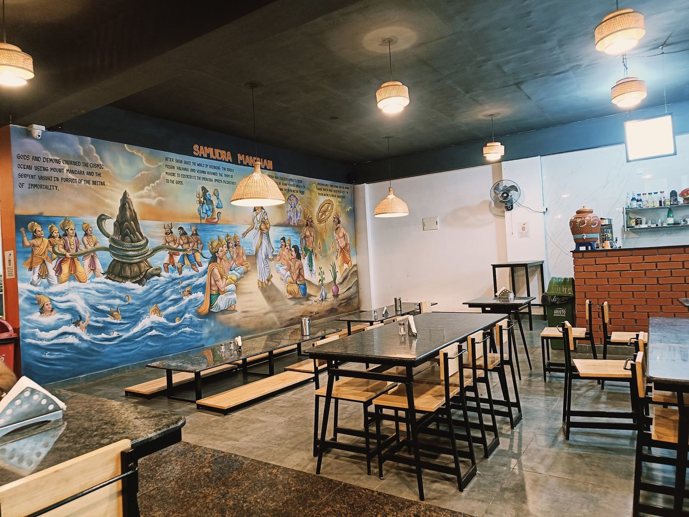
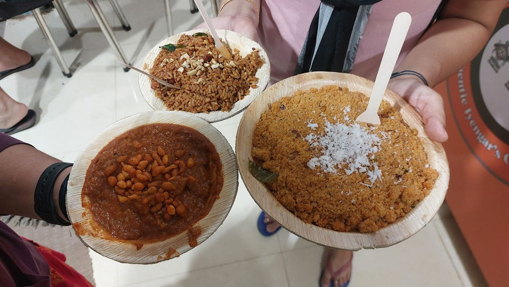

No onion
No garlicSatvik kitchen
No garlicSatvik kitchen
Our kitchen
Home food, the Iyengar way
Mrs. Iyengar's Kitchen cooks traditional Iyengar recipes the way they are made at home: fresh, light and full of flavour. Everything is pure vegetarian and satvik, with no onion and no garlic, so it sits as easy on the stomach as it does on the tongue.
No onion, no garlicSatvik and Jain-friendly cooking
Home-style recipesPuliyogare, gojju and kootu like at home
Made fresh dailyFrom 7:30 am breakfast to dinner
100% pure vegCalm, peaceful dining on the fourth floor